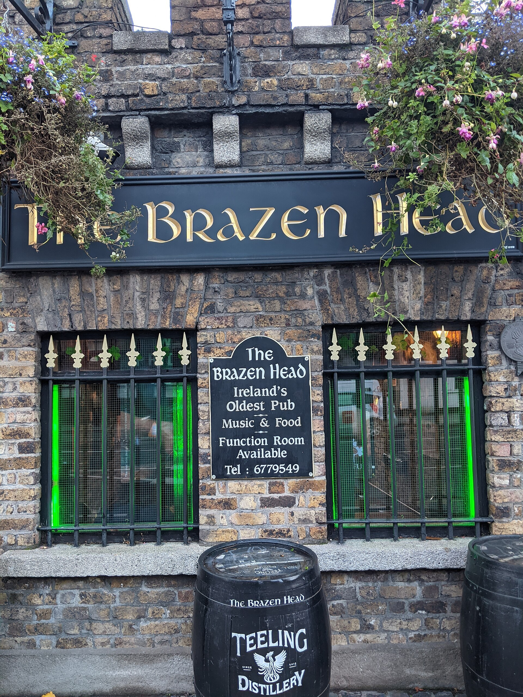

01 · Lower Bridge Street
The Brazen Head
Dublin’s usual answer to “oldest pub,” at 20 Lower Bridge Street beside the Liffey. A hostelry has long been claimed on the site since 1198; the present coaching-inn building dates from 1754. Inside is a warren of rooms that still run as a gastrobar, often with traditional music in the evening.
Tip: Walk west from Christ Church Cathedral. Weekday early afternoon is calmer for a seat; evenings bring music and crowds. Check brazenhead.com for session times.
Directions: Google Maps · Apple Maps
Photo: Matthewvetter, CC BY-SA 4.0, via Wikimedia Commons
Sources: brazenhead.com · Visit Dublin · Visit Dublin: 10 oldest pubs
See The Brazen Head on our Unique Pubs deck →
Find a stay near The Brazen Head →